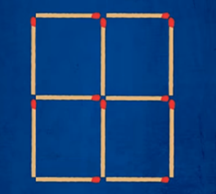
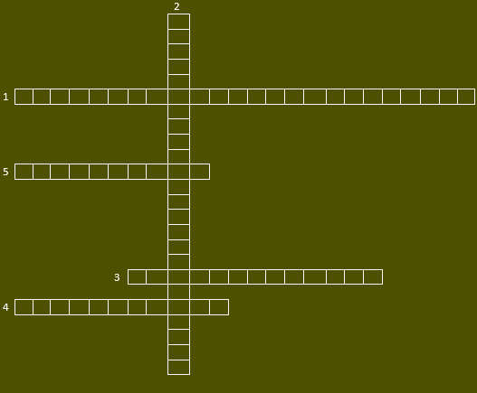
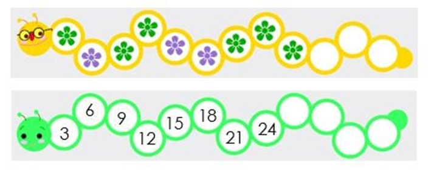
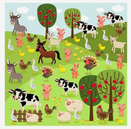
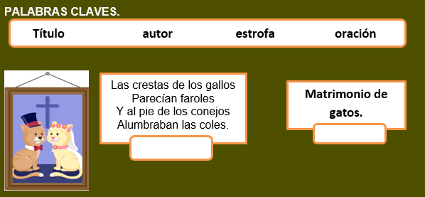
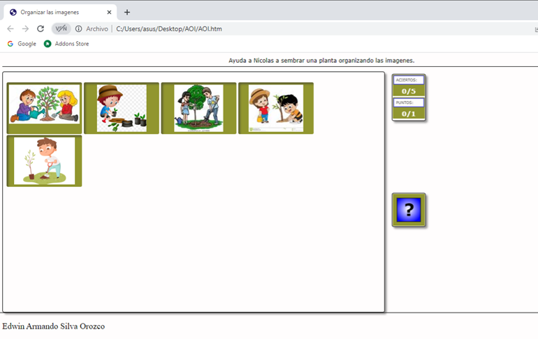
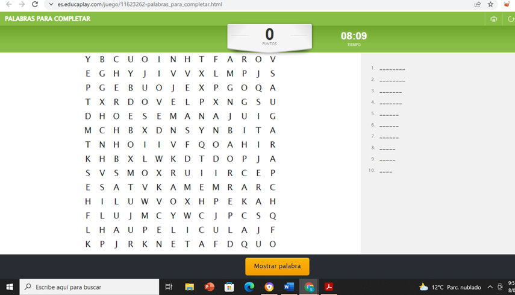
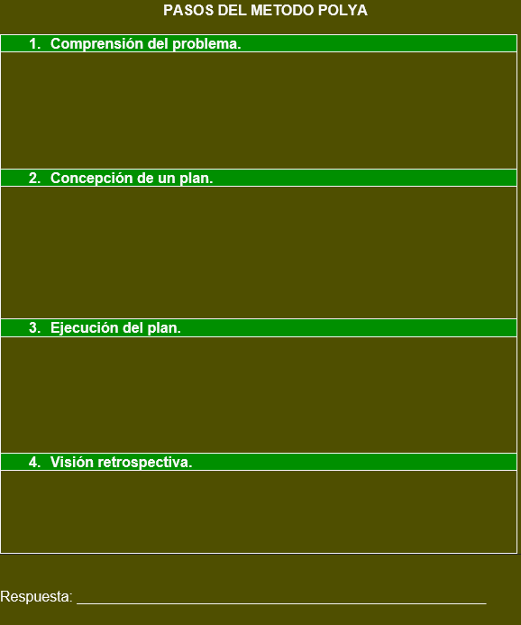
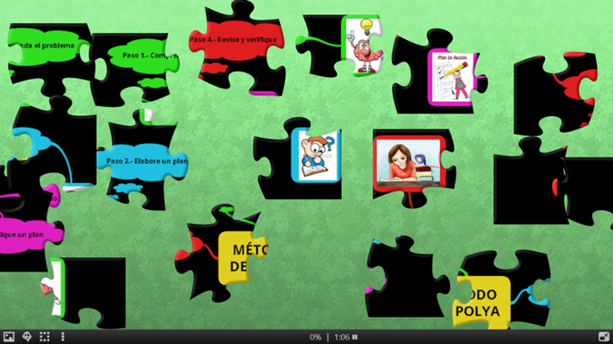

Inicio
Mejorando la comprensión lectora a través del pensamiento computacional.
Institución Educativa Departamental Agroindustrial Santiago de Chocontá
Sede Rural: Hogar Monserrate.
Institución Educativa Departamental Agroindustrial Santiago de Chocontá
Sede Rural: Hogar Monserrate.
Objetivos:
Competencias:
Desarrollar los siguientes retos:

Para ingresar al video da clic sobre la siguiente imagen:
Ahora responde las siguientes preguntas, da clic en el siguiente enlace:
Basado en el video sobre Pensamiento Computacional desarrolle el siguiente crucigrama.
1. Habilidad del pensamiento computacional que consiste en reconocer pautas o estándares de características comunes que se reiteran en aspectos de la realidad.
2. Es la capacidad del pensamiento de poder formular un problema y expresar sus posibles soluciones representadas como secuencias de instrucciones y algoritmos para que una computadora o un humano puedan resolverlo.
3. Nombre de una de las primeras especialistas en utilizar el término de pensamiento computacional.
4. Habilidad del pensamiento computacional que consiste en centrarse en la información importante, dejando de lado aquellas características irrelevantes e innecesarias.
5. Habilidad del pensamiento computacional que consiste en desarrollar instrucciones paso a paso o plantear las reglas a seguir para resolver un problema.

https://es.educaplay.com/recursos-educativos/11538388-crucigrama.html
Haga clic en el enlace anterior para desarrollar el crucigrama en el programa.
Teniendo en cuenta las actividades realizadas, los estudiantes elaboraran un mapa conceptual sobre el pensamiento computacional utilizando la herramienta de Cmaptools.
Los estudiantes se reunirán en grupos de máximo 3 para el desarrollo de la actividad.
Objetivos:
Reconocer patrones repetitivos usando material práctico y del entorno donde se encuentra.
Aplicar patrones en diferentes situaciones para solución de problemas.
Competencias:
Definición de patrón
Un patrón es una sucesión de elementos (auditivos, gestuales, gráficos…) que se construye siguiendo una regla. Esa regla puede ser de repetición o de recurrencia.
Patrones de repetición
Son aquellos en los que los distintos elementos son presentados en forma periódica.
Se pueden crear diversos patrones de repetición teniendo en cuenta su estructura. Vamos a ver algunos ejemplos:
· AB: se repiten dos elementos alternadamente.
Patrones de recurrencia
Son aquellos en los que la regularidad con que se presentan los elementos cambia y de ellos tiene que inferirse su regla de formación, es decir, que puedes descubrir cuál será el siguiente elemento observando el comportamiento de los anteriores.\

Las palabras se pueden clasificar según el número de silabas:
Teniendo en cuenta la explicación anterior.
Escribe cada palabra en el recuadro según su clasificación teniendo en cuenta el número de silabas que las conforman
Para desarrollar la actividad en educaplay ingrese al siguiente link.
https://es.educaplay.com/recursos-educativos/11538581-relacion_de_columnas.html
La evaluación se realizara de manera continua y formativa en cada uno de los cuatro momentos en que se encuentra distribuida la actividad, se va realizando la actividad y a su vez se realiza la respectiva retroalimentación pertinente y formativa teniendo en cuenta las observaciones y situaciones que se pueden ir presentando en el desarrollo de la misma.
Objetivos:
Competencias:

Contesta las siguientes preguntas según la imagen.
a) Escribe el nombre de los animales cuadrúpedos que están en la imagen.
____________________________________________________________________________________________________________________________________________________________________________________.
b) Escribe el nombre de los animales que tienen su cuerpo cubierto de plumas.
___________________________________________________________________________________________________________________________________________________________________________________.
c) ¿Cuántas ovejas hay en la imagen y cuál es su color?
___________________________________________________________________________________________________________________________________________________________________________________.
Para resolver este cuestionario, dirígete al siguiente enlace:
A manera de explicación y participación de los estudiantes se les da a conocer el concepto sobre la abstracción.
Una abstracción es un concepto o una idea que no está asociado a ningún caso concreto... En la vida cotidiana usamos abstracciones todo el tiempo y gracias a eso, por ejemplo, podemos saber que una mesa es una mesa más allá de si es cuadrada o redonda, de madera o de plástico, con 4, 3 o 6 patas.
Razonamiento abstracto en los niños
El razonamiento abstracto depende considerablemente de nuestra imaginación y de nuestra creatividad, ya que dependemos de nuestra capacidad de crear diferentes escenarios posibles partiendo de un concepto aislado.
Partiendo de este punto, podemos deducir la diferencia que existe en el razonamiento abstracto de un niño en comparación al de un adulto. Comenzando por el hecho de que los niños suelen ser más creativos al momento de buscar una solución, dejando casi por completo la objetividad a un lado
Lee el poema “El matrimonio de los gatos”
El matrimonio de los gatos.
Una gata y un gato
se casaron un día
y hubo una fiesta
donde el gato vivía.
Estuvieron presentes
En aquella ocasión
Vecinos y vecinas
De toda la región.
El grillo con la grilla
El mono con su mona
Y el ratón de la esquina
con su hermana la ratona.
Las crestas de los gallos
Parecían faroles
Y al pie de los conejos
Alumbraban las coles.
Hasta la media noche
Llegaron invitados
Con sombreros azules
Y vestidos rosados.
Mientras tanto la gata
Y el gato del casorio
Se quedaron dormidos
En un reclinatorio.
Y soñaron que iban
Por un camino hermoso
A vivir en un mundo
Tranquilo y generoso.
Donde todos los gatos
Y todos los ratones
Crecían como hermanos
En medio de canciones.
Lee los fragmentos del recuadro. Luego, escribe frente a cada fragmento del poema el elemento que corresponde.

EL POEMA MATRIMONIO DE GATOS.
Matrimonio de gatos es el______________ de un poema escrito por Carlos Castro Saavedra, un ___________________ Colombiano. Sabemos que el texto es un poema porque está ordenado en _________________ y cada estrofa tiene varios____________________.
En este __________________se cuenta la celebración del ___________________ de dos gatos, quienes asistieron y como iban _________________ los invitados.
Para el desarrollo de la actividad en educaplay haga clic e ingrese en el siguiente link.
https://es.educaplay.com/recursos-educativos/11559147-completando_textos.html
Objetivos:
Competencias:
Nicolas es un estudiante de la sede rural Hogar Monserrate que se preocupa mucho por cuidar el planeta, pero tiene un problema, no recuerda los pasos a seguir para sembrar una planta, ayuda a Nicolas a recordar organizando las imágenes.

Para el desarrollo de la actividad en Ardora haga clic e ingrese en el siguiente link.
ALGORITMO:
Se puede entender un algoritmo como una secuencia de pasos finitos bien definidos que resuelven un problema. Por ejemplo, la ejecución de tareas cotidianas tan simples como cepillarse los dientes, lavarse las manos o seguir el manual de instrucciones de armado de un mueble, se pueden ver como un algoritmo.
Para ver el video de clic sobre la imagen
En la escuela de Juan dejaron una tarea que consiste en hacer un rompecabezas, para el desarrollo de esta actividad enviaron una fotocopia con los materiales e instrucciones.
¿Cómo hacer un rompecabezas?
Materiales: 16 cajas vacías de fósforos, cartulina, cinta adhesiva de color, cortador o tijeras, una foto o un dibujo. A continuación, encontrarás las instrucciones para hacer un rompecabezas. Después de leerlas con atención, deberás enumerarlas según el orden adecuado.
______Pega la cinta adhesiva de color alrededor de las cajas.
______Pega la cartulina encima de este rectángulo o cuadrado que has hecho con las cajas. Procura sobre todo que las cajas estén muy juntas y queden bien pegadas a la cartulina.
______Con el cortador o con unas tijeras, separa las cajas cortando a la vez la foto o el dibujo y la cartulina.
_____Pon las cajas de fósforos encima de la mesa, una al lado de la otra. Si tienes dieciséis, haz cuatro columnas de cuatro cajas. En cualquier caso, debes formar un cuadrado o un rectángulo regular. No tienen que quedar agujeros.
______Dale la vuelta, de forma que la cartulina quede abajo y las cajas arriba. Elige el dibujo o la foto que mejor encaje por su tamaño, encima de las cajas y pégala como la cartulina.
Para desarrollar esta actividad de forma interactiva se puede ingresar haciendo clic en el siguiente link:
Elaborar un algoritmo para solucionar un problema propio de su contexto.
Objetivos:
Competencias:
Lea las oraciones y complételas.

Para solucionar la sopa de letras has clic en el siguiente link:
https://es.educaplay.com/recursos-educativos/11623262-palabras_para_completar.html
Solucionar el siguiente problema empleando el método Pólya.
En la escuela de Laura dejaron como tarea en la asignatura de español investigar la biografía de un artista famoso, Laura investigo la biografía de Leonardo da Vinci y encontró la siguiente información.
Leonardo da Vinci nació en 1452, en un pueblo cercano a Florencia. A los 14 años entró al taller de Andrea del Verrocchio, figura principal de la época en el campo de la pintura y la escultura. 40 años después pintó una de sus obras más famosas, la Monna Lisa, y murió cuando esta tenía 13 años de pintada.
Ayuda a Laura a determinar ¿En qué año falleció leonardo?

Alimentos inadecuados
Tener demasiada comida también causa problemas. En algunas áreas del mundo hay tantos alimentos que muchas de sus partes útiles son desechadas. A la gente le gusta cocinar con harina blanca, refinada. Esta harina se prepara eliminando el salvado del trigo. La gente prefiere el arroz blanco que también ha perdido su cáscara exterior. El salvado de estos cereales contiene la mayor parte de los nutrientes. La harina y el arroz integrales son mejores para la salud porque son completos. Están en su estado natural: nada se les ha quitado ni se les ha agregado. Antiguamente las personas no sabían que el cuerpo humano necesita la fibra del pan y del arroz integral. Hemos aprendido acerca de las ventajas de la fibra en el tubo digestivo. Si consumimos poca fibra podemos enfermar.
Cómo funciona el cuerpo humano: los alimentos y la digestión, Ed. Norma, Bogotá, 1990.
Encuentra los pasos del método Pólya para la resolución de problemas y escribe en que consiste cada uno de ellos.

Para armar el rompecabezas has clic en el siguiente link:
Obra publicada con Licencia Creative Commons Reconocimiento Compartir igual 4.0